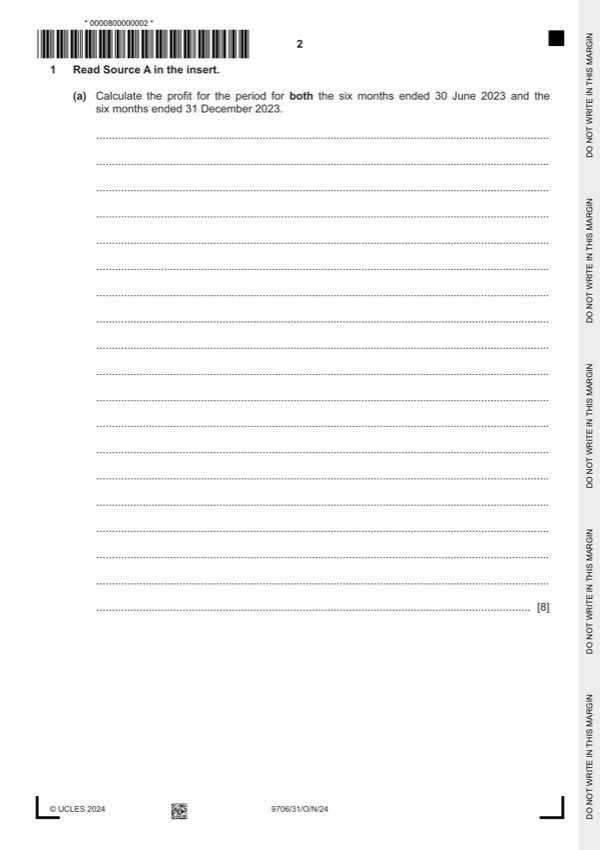

Question 1

Original paper page 2
Part 1(a) — solution
- other 1 600 }(1) 1 600 }*(1)
Mark points
- other 1 600 }(1) 1 600 }*(1)
Part 1(b) — solution
Prepare appropriation accounts for both the six months ended 30 June 2023 and the six months ended 31 13
December 2023.
Jan – June July-Dec
$ $
Profit for the period 5 600 12 590
Less interest on capital
Angie 2 500 } 3 872
Harry 1 500 4 000 }(1) 3 623 7 495 W1
Less salary
Angie 5 000 } 5 000 }
Harry 0 5 000 }(1) 6 000 11 000 }(1)
Residual loss (3 400) (5 905)
Share of loss
Angie (1 700) (1)OF (4 429) (1)OF
Harry (1 700) (3 400) (1)OF (1 476) (5 905) (1)OF
W1
Angie Harry
$ $
Original capital 50 000 30 000
Revaluation (150 000 – 80 100) 34 950 (1) 34 950 (1)OF
Goodwill added 15 000 15 000 (1) both
Goodwill removed (22 500) (7 500) (1) both
Revised capital 77 450 72 450
Interest on capital 10% 6/12 3 872 (1)OF 3 623 (1)OF
Mark points
- Include the ideas shown in the solution above.
Part 1(c) — solution
- 12590/119000 100 = 10.58% (1)OF
Mark points
- 12590/119000 100 = 10.58% (1)OF
Part 1(d) — solution
Discuss whether Harry should be comparing the profit margin of the company with that of the partnership. 3
As the audit report is qualified the financial statements may well not give a true and fair view (1) and the profit margin he
has calculated may not be reliable (1).
Because the company is in a different industry it may not be useful to compare the results of the two businesses (1).
However a review of the financial statements may help him to identify areas in the partnership where improvements could
be made (1).
Max 3
Accept other valid responses.
Mark points
- Include the ideas shown in the solution above.